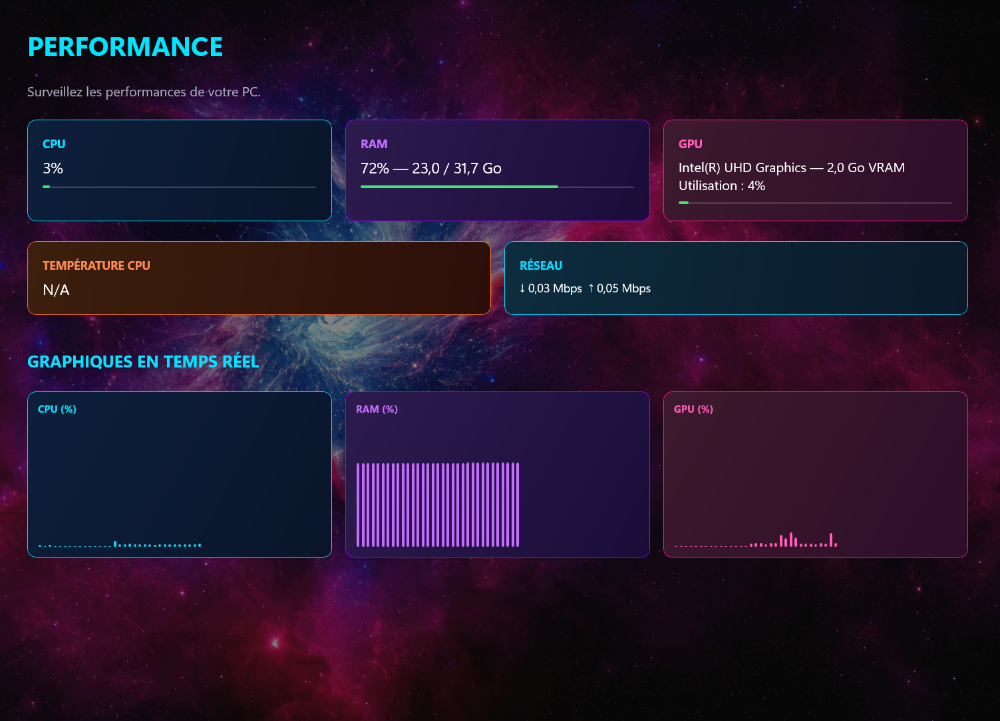

01 / PERFORMANCE
Garde un œil sur ton PC.
Surveille l’utilisation du processeur (CPU), de la mémoire vive (RAM), de la carte graphique (GPU), la température du CPU et l’activité réseau.
Des graphiques en temps réel te permettent de suivre l’évolution des ressources de ton ordinateur.